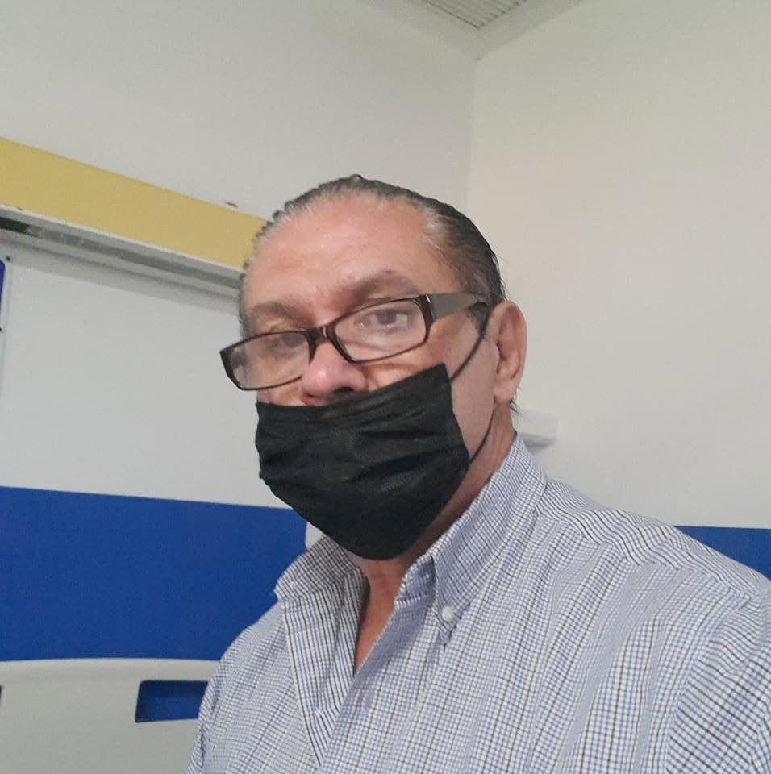

Cuidado en casa
Acompañamiento, supervisión, apoyo en alimentación, movilidad e higiene básica.
Guadalajara y Zapopan, Jalisco
Atención con calidez humana para personas adultas mayores, pacientes en recuperación y acompañamiento hospitalario. Experiencia, responsabilidad y trato digno.
Respuesta más rápida por llamada o WhatsApp. Disponibilidad sujeta a agenda.

Servicios
El servicio puede adaptarse a la necesidad de la familia, el domicilio o el hospital.
Acompañamiento, supervisión, apoyo en alimentación, movilidad e higiene básica.
Presencia y apoyo para pacientes hospitalizados, con comunicación respetuosa con la familia.
Apoyo cotidiano con paciencia, respeto, conversación y observación de cambios importantes.
Recordatorio de medicamentos según indicación de la familia o del médico tratante.
Confianza
Sabemos que elegir a una persona para cuidar a un familiar es una decisión importante. Por eso se ofrece contacto directo, trato claro y atención respetuosa.
Este sitio anuncia servicios de cuidado y acompañamiento. No sustituye la atención de un médico ni un servicio de urgencias. En caso de emergencia, llame al 911.
Si el cuidador cuenta con título, cédula o certificaciones, agrégalas aquí para aumentar la confianza.
Contacto
Explique si necesita cuidado en casa u hospital, zona, horario y fecha de inicio.
33 1205 8311